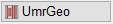
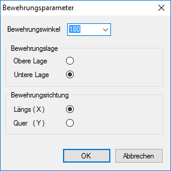
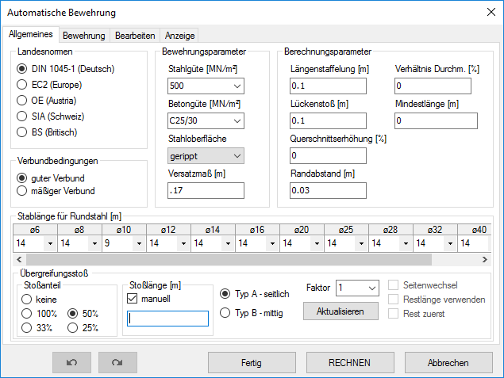
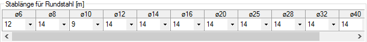
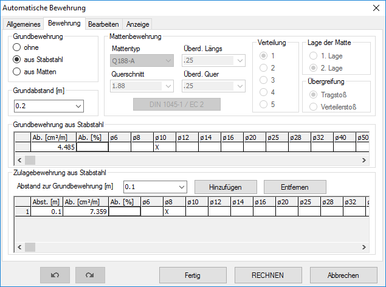
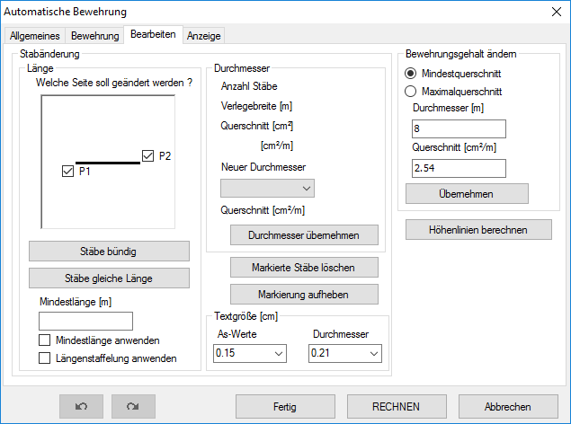
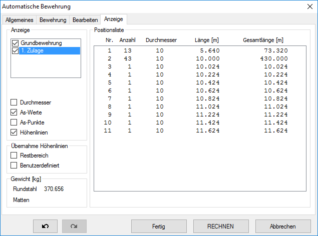

")
")
Flächige Bewehrungen für Platten und Scheiben mit unregelmäßig geformten Umrissen, die mit FEM-Programmen (Finite-Elemente-Methoden) berechnet wurden. ISBCAD generiert einen Bewehrungsvorschlag mit optimaler Ausnutzung, der im Folgenden manuell nachbearbeitet werden kann.
Die Software führt Sie automatisch durch die benötigten Arbeitsschritte. Je nachdem, ob Sie die as-Werte aus der FEM-Berechnung übernehmen oder manuell angeben wollen.
Abfrage, ob die as-Werte aus der FEM-Berechnung übernommen werden sollen.

mit Übernahme aus FEM
as-Werte werden aus dem angeklickten FEM-Datensatz übernommen. [Welche FE-Werte? (anklicken)]. Falls kein FEM-Datensatz vorhanden ist, werden Sie dazu aufgefordert, eine Ergebnisdatei einzulesen.
ohne Übernahme aus FEM
Es wird nur die Grundbewehrung erzeugt. Zusätzlich können mit Bereichen geänderter Bewehrungsgehalte Gebiete mit erhöhten as-Werten definiert werden.
Rasterabstand (m)
Eingabe des Abstandes für das Punktraster.
OK
Übernimmt die Eingaben und schließt den Dialog.
Abbrechen
Bricht die Bearbeitung ab und schließt den Dialog.
Wenn Sie die Option ohne Übernahme aus FEM gewählt haben, können Sie sofort die Umrissgeometrie definieren.
(s. unten: Umrissgeometrie des Verlegebereiches definieren)
1.FEM Ergebnisdatei öffnen oder anklicken
Auswahl der FEM-Ergebnisdatei.
a)Wenn kein FEM-Datensatz auf der Zeichnung vorhanden ist:
Wählen Sie in der Dateiauswahl die zu dem Grundriss gehörende FEM-Ergebnisdatei (*.fem) aus und klicken Sie auf Öffnen.
Nach dem Einlesen der Ergebnisdatei können Sie den Datensatz platzieren (s. FEM-Ergebnisdatei platzieren).
b)Wenn bereits ein FEM-Datensatz auf der Zeichnung vorhanden ist:
Klicken Sie den Datensatz an. [Welche FE-Werte? (anklicken)]. ISBCAD wechselt zur Definition der Umrissgeometrie (s. Umrissgeometrie definieren).
FEM-Ergebnisdatei platzieren
§Führen Sie einen der folgenden Schritte aus, um den Drehwinkel anzugeben. [Drehwinkel].
a)Geben Sie den Drehwinkel (Winkel zur Horizontalen) an oder bestätigen Sie den Vorschlagswert mit Rechtsklick. Mit negativem Wert wird im Uhrzeigersinn gedreht. Bereits abgelegte FEM-Datensätze werden vorübergehend ausgeblendet.
b)Mit den Ausrichtungsoptionen P... oder O... können Sie die FE-Werte parallel oder orthogonal zu einem Bezugselement ausrichten. Klicken Sie die entsprechende Ausrichtungsoption an und klicken Sie anschließend das Bezugselement an, dessen Neigung übernommen werden soll.
c)Klicken Sie einen der Vorschlagswerte ein: 0°, 90°, 180°, 270°: Das Ergebnis ist sofort sichtbar.
§Geben Sie den Größenfaktor ein und bestätigen Sie mit der Eingabetaste. 1 = Originalgröße. [Faktor].
Standardmäßig wird der Faktor "2" vorgeschlagen. Den Größenfaktor können Sie auch nachträglich mit der Funktion [GroFak] im Funktionsbereich ändern.
§Legen Sie den FEM-Datensatz mit einem Linksklick auf der Zeichenfläche ab. [Lage].

Damit die Anzeige der as-Werte zu der Grundrissdefinition passt, müssen Sie gegebenenfalls den Größenfaktor ändern. Beispiel: Wenn im FEM-Programm die Datenpunkte im Maßstab 1:100 gespeichert wurden und Sie den Bewehrungsplan im Maßstab 1:50 zeichnen, müssen Sie den Datenbereich mit dem Faktor 2 anpassen. §Geben Sie den geeigneten Faktor ein und bestätigen Sie mit OK. §Um mit der automatischen Bewehrung fortzufahren, klicken Sie im Funktionsbereich auf  . |

2.Umrissgeometrie des Verlegebereiches definieren [UmrGeo]
Der Verlegebereich stellt die Begrenzung der Bewehrung dar. Das Programm schneidet an diesen Grenzen die Stäbe ab. Eventuell müssen Sie durch geeignete Maßnahmen z. B. für die Einspannbewehrung sorgen. Das kann durch die zusätzliche Anordnung von Winkeleisen geschehen.
Der Verlegebereich ist nicht zwingend identisch mit dem Grundrisspolygon. Es wird die gesamte Decke in einer FEM-Berechnung erfasst, aber die Bewehrung wird in mehrere Bauabschnitte aufgeteilt.
Falls Sie Änderungen an dem Verlegebereich vornehmen wollen, müssen Sie diesen zuvor löschen.
§Wählen Sie im Funktionsbereich die Art der Definition aus. Sie können die Umrissgeometrie über das Anklicken von Eckpunkten [Punkte] oder Elementen [Elemen] definieren.
2.1 Äußere Umrissgeometrie definieren
§Geben Sie einen Abstand in der eingestellten Einheit ein oder übernehmen Sie den in der Eingabe stehenden Wert mit Rechtsklick. [Abstand o. Eckpunkt wählen].
|
§Klicken Sie die Eckpunkte des Verlegebereiches in Reihenfolge an. [n. Eckpunkt (Umrissgeometrie)]. Mit Rechtsklick gelangen Sie wieder zur Abstandsangabe und können einen neuen Abstand angeben. Die Eingabe wird am zuletzt angeklickten Punkt wieder aufgenommen. Der neue Abstand gilt demnach für die Parallele vom letzten zum folgenden Punkt. Das Polygon wird automatisch geschlossen, wenn der erste Punkt ein zweites Mal angeklickt wird. Sie können nun mit der Angabe der inneren Umrissgeometrie fortfahren.
|
||||
|
§Klicken Sie die Elemente für die Umrandung des Verlegebereiches in Reihenfolge an. [Elemente wählen (Umrissgeometrie)]. Achten Sie darauf, die Elemente auf der Seite anzuklicken, zu der der Abstand angetragen werden soll. Sie können sowohl Linien als auch Kreise anklicken. Das erste und letzte Element sollte eine Linie sein, um eindeutige Schnittpunkte zu erzeugen. §Schließen Sie das Polygon mit Das Polygon wird nur geschlossen, wenn es auch tatsächlich geschlossen ist. Ist es lediglich optisch geschlossen, z. B. bei Durchbrüchen mit dem Abstand 0, wird das Polygon nicht aufgenommen. Sie können nun mit der Angabe der inneren Umrissgeometrie fortfahren. |


2.2 Umrisse der Durchbrüche definieren
|
§Geben Sie einen Abstand in der eingestellten Einheit ein oder übernehmen Sie den in der Eingabe stehenden Wert mit Rechtsklick. [Abstand o. Eckpunkt wählen]. §Klicken Sie die Eckpunkte/Elemente der Durchbrüche wie bei der Angabe der äußeren Umrissgeometrie an. §Wenn Sie den Verlegebereich definiert haben, klicken Sie auf Öffnet den Dialog Bewehrungsparameter. |

Um in einer vorhandenen Geometrie fortzufahren
§Klicken Sie einen Polygonhilfspunkt an. Sie gelangen wieder zur Abstandsangabe. [Abstand o. Eckpunkt wählen]. |
Um die definierte Geometrie zu bearbeiten
Wenn Sie die Bewehrung einer Lage beendet haben, oder im Dialog Bewehrungsparameter auf Abbruch klicken, erscheint die Schaltfläche Letztes Polygon. §Klicken Sie auf Letztes Polygon, um die Bearbeitung der zuvor beschriebenen Umrissgeometrie mit den zugehörigen Durchbrüchen wieder aufzunehmen. §Wenn Sie den Verlegebereich definiert haben, klicken Sie auf Öffnet den Dialog Bewehrungsparameter. |
3.Bewehrungsparameter angeben (Dialog)
 |
Bewehrungswinkel
Klicken Sie einen der Werte in der Auswahlbox an. Sie können den Winkel auch direkt eintippen.
Es wird der Winkel angegeben, in dem die Bewehrung liegt. 0° geht von unten nach oben, 180° von oben nach unten. 90° von rechts nach links und 270° von links nach rechts.
Bewehrungslage
Obere Lage, Untere Lage
Wählen Sie entweder die obere oder die untere Lage.
Bewehrungsausrichtung
Längs (X), Quer (Y)
Hiermit legen Sie fest, mit welchen Ergebnissen aus der FEM-Datei gearbeitet werden soll.
OK
Klicken Sie auf diese Schaltfläche, um mit der Bearbeitung fortzufahren. Öffnet den Dialog Automatische Bewehrung.
Abbrechen
Wenn Sie diese Schaltfläche anklicken, gelangen Sie wieder zur Angabe der Umrissgeometrie.
4.Bewehrung bearbeiten
Wenn Sie die Umrissgeometrie festgelegt haben und im Dialog Bewehrungsparameter auf OK geklickt haben, wird der Dialog Automatische Bewehrung geöffnet.
§Ändern Sie die gewünschten Eigenschaften auf der entsprechenden Registerkarte.
§Wenn Sie alle Stäbe bearbeitet haben, klicken Sie im Dialog auf die Schaltfläche Fertig, um die Bewehrungszeichnung auf den Plan zu übertragen.
Optionen im Dialog "Automatische Bewehrung"
Verwenden Sie die Schaltflächen im unteren Dialogbereich, um Änderungen zu übernehmen oder die vorherigen Parameter wiederherzustellen.
|
Setzt die zuletzt geänderten Parameter schrittweise zurück. |
|
Stellt zurückgesetzte Änderungen schrittweise wieder her. |
|
Beendet die Bearbeitung und legt die Bewehrung oberhalb der vorhandenen Zeichnung ab. Die eingestellten Parameter werden im Polygon gespeichert und der Dialog wird geschlossen. |
|
Berechnet die Bewehrung und aktualisiert die Zeichnungsdarstellung. Wenn Sie nach dem Bearbeiten von Stäben nochmals rechnen lassen, wird der Ursprungszustand wiederhergestellt. |
|
Die Bewehrungsdarstellung wird gelöscht und der Dialog wird geschlossen. Veränderte Parameter werden nicht gespeichert. |


 Landesnormen Norm für die Berechnung der Verankerungs- und Übergreifungslängen. Verbundbedingungen Verbundbedingungen für die Berechnung der Verankerungs- und Übergreifungslängen. Bewehrungsparameter Eingabe der Bewehrungsparameter. Stahlgüte (MN/m²) Wählen Sie die benutzte Stahlgüte in der Auswahlbox aus oder geben Sie die Streckgrenze (fyk) ein. Betongüte (MN/m²) Stellen Sie die nötige Betongüte ein. Stahloberfläche Wählen Sie die vorhandene Stahloberfläche aus. Versatzmaß Angabe des Versatzmaßes (a1).
Berechnungsparameter Eingabe der Berechnungsparameter. Längenstaffelung Die Stablängen werden auf das eingestellte Maß aufgerundet, sofern sie nicht an die Umrissgeometrie stoßen. Lückenstoß Stäbe, deren Anfang und Ende sich um weniger als das eingestellte Maß nähern, werden zu einem Stab verschmolzen. Bei unterschiedlichen Durchmessern kann zusätzlich das Verhältnis der Durchmesser berücksichtigt werden (s. Verhältnis Durchm. [%] weiter unten). Werden unterschiedliche Durchmesser zusammengefasst, wird immer der größere genommen. Querschnittserhöhung Hiermit können Sie die as-Werte erhöhen. Randabstand Verschiebung der Stäbe in Richtung rechtwinklig zum Bewehrungswinkel. Verhältnis Durchm. [%] Beim Lückenstoß kann zusätzlich der Unterschied der Durchmesser beachtet werden. Damit können Sie vermeiden, dass ein sehr dünner Stab mit einem dicken Stab verschmolzen wird.
Stablänge für Rundstahl [m]  Es werden alle Stabdurchmesser aus der Rundstahltabelle in der oberen Zeile aufgelistet. Zum Ändern der Stablänge klicken Sie , um eine Liste mit allen verfügbaren Stablängen aufzuklappen. Wählen Sie anschließend aus der Liste die entsprechende Stablänge aus. Übergreifungsstoß Stoßanteil Auswahl eines Stoßanteils. Keine: Zusätzliche Einstellungen für die Stoßanordnung sind nicht freigeschaltet. Stoßlänge [m] Eingabe einer individuellen Stoßlänge in Meter. Nur verfügbar, wenn im Dialog as-Werte die Option ohne Übernahme aus FEM gewählt worden ist. Um eine Stoßlänge einzugeben, setzen Sie bei manuell einen Haken in die Checkbox (
Aktualisieren Klicken Sie nach jeder Veränderung der Parameter auf diese Schaltfläche, um die Verteilung der Stöße der Grundbewehrung der neuen Situation anzupassen.
Aufgrund der Komplexität der Situationen kann es erforderlich sein, mehrere Möglichkeiten durchzuspielen. Bei der Bearbeitung der Grundbewehrung ist es sinnvoll, die Zulagen auszublenden (s. Registerkarte [Anzeige]). Typ A - seitlich Die Verlegung basiert auf der Verschiebung der Stoßmitten: Beispiel 50% Stoß: In der ersten Reihe wird n*L + R1 verlegt. In der zweiten Reihe wird der Stoß um 1,3*F*ls verschoben und anschließend mit n*L + R2 ausgelegt. Beim 33% Stoß wird eine und beim 25% Stoß eine weitere Reihe hinzugelegt, deren Stöße um 1,3*F*ls versetzt angeordnet sind. Faktor Erhöhung des Stoßversatzes. Im Ursprung wird mit dem Faktor Ñ1ì gerechnet.
Typ B - mittig Die Verlegung basiert auf der Variation der Stablängen: Beispiel 50% Stoß: In der ersten Reihe wird n*L + R1 verlegt. In die zweite Reihe kommen ½*L + n*L + R2. Beim 33% Stoß werden in die erste Reihe n*L + R1, in der zweiten Reihe 2/3*L + n*L + R2 und in der dritten Reihe 1/3*L + n*L + R3 verlegt. Um die Verteilung der Stöße weiter zu verändern, können Sie die folgenden Optionen hinzunehmen und kombinieren. Mit welcher Kombination das beste Ergebnis erzielt wird, kann nicht vorhergesagt werden und ist durch wechselnde Kombinationen herauszufinden. Seitenwechsel Wenn in der ersten Reihe von links nach rechts verlegt wird, beginnt die zweite Reihe auf der rechten Seite. Abwechselnd folgt Reihe auf Reihe. Restlänge verwenden Die anfallenden Reste werden mit verbraucht. Die Restlänge mit der höchsten Zahl wird bevorzugt verwendet. Die Reste werden nicht zwingend unmittelbar in der folgenden Reihe eingebaut. Rest zuerst Nur in Verbindung mit Restlänge verwenden. Die Reste werden an den Anfang der Reihen gelegt.
|
||||||||||||||||||||||||||||||

 ) und geben Sie die gewünschte Stoßlänge ein. Die Eingabe einer negativen Stoßlänge ist nicht möglich.
) und geben Sie die gewünschte Stoßlänge ein. Die Eingabe einer negativen Stoßlänge ist nicht möglich.
 Grundbewehrung Entscheiden Sie, ob ohne oder mit Grundbewehrung aus Stabstahl oder Matten gearbeitet werden soll. Geben Sie immer einen Abstand ein, darauf beziehen sich die Abstände der Zulagen. Mattenbewehrung Die Eingaben werden aktiviert, wenn Grundbewehrung aus Matten gewählt wurde. Die Mattenverlegung entspricht der Methode [Matten | VerPol]. Die Matten werden in Bewehrungsrichtung verlegt. Bei Q-Matten müssen Sie die Matten in beiden Richtungen angeben, damit die as-Werte in X- und Y-Richtung abgezogen werden. Grundbewehrung aus Stabstahl Sie können einen oder mehrere Durchmesser wählen. Klicken Sie dazu in das Feld unterhalb des Durchmessers. Ab. [cm²/m] Abdeckung: Querschnitt des größten gewählten Durchmessers. Ab. [%] Abdeckung des maximalen as-Wertes durch den größten gewählten Durchmesser. Beachten Sie, dass es sich dabei um eine ÑSingularitätì handeln kann. Zulagebewehrung aus Stabstahl Die Zulagen werden zwischen die Grundbewehrung gelegt. Wenn Sie die Bewehrung ohne Grundbewehrung ausführen, werden die Zulagen in gleicher Weise verlegt. Abstand [m] Klicken Sie einen Wert in der Ausklappliste an oder tippen Sie den Abstand ein. Hinzufügen Klicken Sie auf diese Schaltfläche, damit der Abstand in die Tabelle aufgenommen wird. Entfernen Entfernt die markierte Zeile. Tabelle Klicken Sie in der Zeile der gewünschten Zulage auf ein oder mehrere Felder unter den Durchmessern.
Beispiel
|

 Die Funktionen auf dieser Seite sind erst dann sinnvoll, wenn die Bewehrung durch RECHNEN generiert wurde. Bevor Sie die Aktionen ausführen können, müssen Stäbe markiert sein. Die Selektion kann nur von dieser Seite aus erfolgen. Damit der Cursor auf der Zeichnung aktiviert wird, klicken Sie am besten auf die Titelleiste der Zeichnung.
Stabänderung
Bewehrungsgehalt Sie können die as-Werte manipulieren. Führen Sie diese Aktion aus, bevor Sie Stäbe ändern!
Höhenlinien berechnen Das Programm bietet zwei Arten von Höhenlinien an. Wenn Sie auf dem Plan die zugehörigen Höhenlinien darstellen wollen, müssen Sie diese erzeugen. Das Programm teilt den Bereich von 0 - max as in zehn gleiche Abschnitte. Für jeden Abschnitt können Sie eine andere Farbe wählen. Diese wird nur am Bildschirm benutzt. Wenn die Zeichnung generiert wird, wird Stift 1 benutzt. Sie können die Werte auch durch eigene Werte ersetzen. Wenn Sie nicht alle Bereiche benutzen möchten, setzen Sie den Wert auf 0 (Null). Die Genauigkeit teilt die Isolinien in entsprechend kleine Teillinien.
|


 Anzeige Hier steuern Sie die Anzeige für die Bearbeitung. Schalten Sie nur die Elemente ein, die zurzeit bearbeitet werden. Die Anzeige wird sofort aktualisiert.
(Liste) Abhängig von der Anzahl der gewählten Zulagen, können Sie diese, neben der Grundbewehrung, ein- und ausblenden. Matten Sofern Sie Matten als Grundbewehrung gewählt haben, können Sie diese ein- bzw. ausschalten. Durchmesser Die Dicke wird in der Stabmitte angezeigt. Die Einstellung der Textgröße finden Sie auf der Registerkarte Bearbeiten. As-Werte Die aktuellen as-Werte werden angezeigt. Sie werden nicht in die Zeichnung übernommen! As-Punkte Die Lage der Punkte kann angezeigt werden. Das ist für die Lage der Kreise geänderter Bewehrungsgehalte hilfreich. Höhenlinien Die Höhenlinien nicht abgedeckter Bereiche und die as-Höhenlinien können ein- und ausgeschaltet werden. Übernahme Höhenlinien Restbereich Wenn Sie in die Checkbox einen Haken setzen, werden die Bereiche, die nicht abgedeckt sind, auch auf der Zeichnung dargestellt. Benutzerdefiniert Die manuell erzeugten as-Höhenlinien werden in die Zeichnung übernommen. Hier wird für alle Linien Stift 1 benutzt. Zusätzlich wird an verschiedenen Stellen der Höhenwert in die Linien geschrieben. Gewicht Anzeige der aktuellen Gewichte für den Rundstahl und ggf. der Matten. Positionsliste In der Positionsliste werden alle Positionen angezeigt, sortiert nach Durchmesser und Länge. In der Liste markierte Positionen werden am Bildschirm ebenfalls markiert (sofern sie nicht auf ausgeblendeten Folien liegen).
|
Siehe auch: